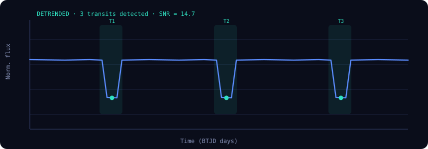

A concise, reproducible summary of detection, classification and fitted parameters.


| Check | Result | Interpretation |
|---|---|---|
| Odd–even depth test | Pass | Consistent depths — not an eclipsing binary |
| Secondary eclipse | None | No occultation at phase 0.5 |
| Centroid offset | Stable | Source on target — blend disfavoured |
| Transit shape | U-shaped | Flat-bottom favours planetary transit |
| False-alarm prob. | 3.1e-5 | Highly significant signal |